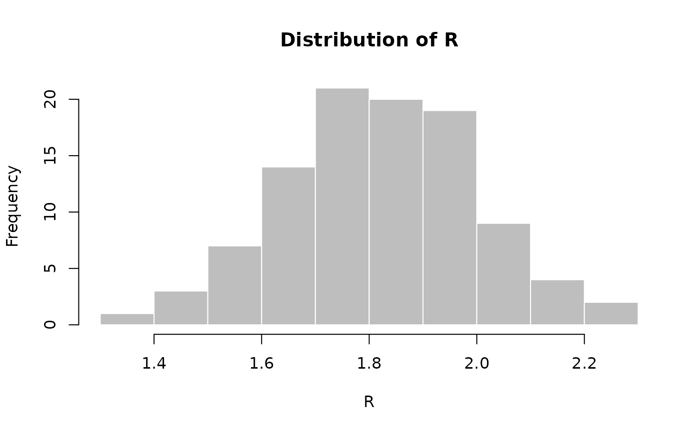
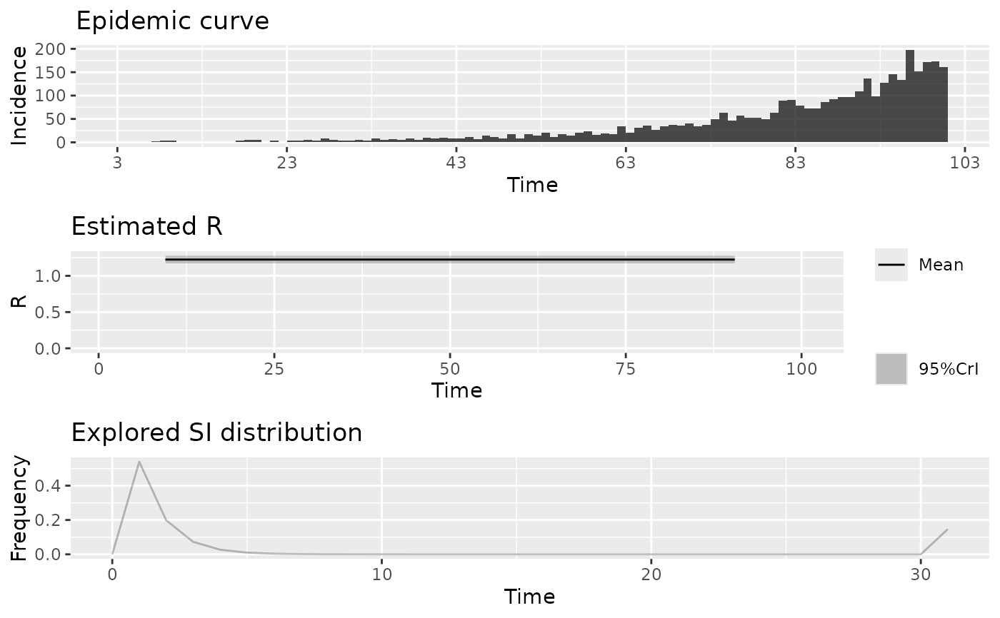

This function simulates future incidence based on past incidence data, a selection of plausible reproduction numbers (R), and the distribution of the serial interval (time from primary onset to secondary onset).
Usage
project(x, ...)
# Default S3 method
project(x, ...)
# S3 method for class 'incidence'
project(
x,
R,
si,
n_sim = 100,
n_days = 7,
R_fix_within = FALSE,
model = c("poisson", "negbin"),
size = 0.03,
time_change = NULL,
instantaneous_R = FALSE
)Arguments
- x
An
incidenceobject containing daily incidence; other time intervals will trigger an error.- R
A vector of numbers representing plausible reproduction numbers; for instance, these can be samples from a posterior distribution using the `earlyR` or `EpiEstim` packages. If `time_change` is provided, then it must be a `vector` (for fixed values of R per time window) or a `list` of vectors (for separate distributions of R per time window), with one element more than the number of dates in `time_change`.
- si
A function computing the serial interval, or a `numeric` vector providing its mass function, starting a day 1, so that `si[i]` is the PMF for serial interval of `i`. The model implicitly assumes that `si[0] = 0`. For functions, we strongly recommend using the RECON package
distcreteto obtain such distribution (see example).- n_sim
The number of epicurves to simulate. Defaults to 100.
- n_days
The number of days to run simulations for. Defaults to 14.
- R_fix_within
A logical indicating if R should be fixed within simulations (but still varying across simulations). If
FALSE, R is drawn for every simulation and every time step. Fixing values within simulations favours more extreme predictions (see details)- model
Distribution to be used for projections. Must be one of "poisson" or "negbin" (negative binomial process). Defaults to poisson
- size
size parameter of negative binomial distribition. Ignored if model is poisson
- time_change
an optional vector of times at which the simulations should use a different sample of reproduction numbers, provided in days into the simulation (so that day '1' is the first day after the input `incidence` object); if provided, `n` dates in `time_change` will produce `n+1` time windows, in which case `R` should be a list of vectors of `n+1` `R` values, one per each time window.
- instantaneous_R
a boolean specifying whether to assume `R` is the case reproduction number (`instantaneous_R = FALSE`, the default), or the instantaneous reproduction number (`instantaneous_R = TRUE`). If `instantaneous_R = FALSE` then values of `R` at time `t` will govern the mean number of secondary cases of all cases infected at time `t`, even if those secondary cases appear after `t`. In other words, `R` will characterise onwards transmission from infectors depending on their date of infection. If `instantaneous_R = TRUE` then values of `R` at time `t` will govern the mean number of secondary cases made at time `t` by all cases infected before `t`. In other words, `R` will characterise onwards transmission at a given time.
Details
The decision to fix R values within simulations
(R_fix_within) reflects two alternative views of the uncertainty
associated with R. When drawing R values at random from the provided
sample, (R_fix_within set to FALSE), it is assumed that R
varies naturally, and can be treated as a random variable with a given
distribution. When fixing values within simulations (R_fix_within
set to TRUE), R is treated as a fixed parameter, and the uncertainty
is merely a consequence of the estimation of R. In other words, the first
view is rather Bayesian, while the second is more frequentist.
Author
Pierre Nouvellet (original model), Thibaut Jombart (bulk of the code), Sangeeta Bhatia (Negative Binomial model), Stephane Ghozzi (bug fixes time varying R)
Examples
## example using simulated Ebola outbreak
if (require(outbreaks) &&
require(distcrete) &&
require(incidence) &&
require(magrittr)) {
si <- distcrete("gamma", interval = 1L,
shape = 2.4,
scale = 4.7,
w = 0.5)
i <- incidence(ebola_sim$linelist$date_of_onset)
plot(i)
## projections after the first 100 days, over 60 days, fixed R to 2.1
set.seed(1)
proj_1 <- project(x = i[1:100], R = 2.1, si = si, n_days = 60)
plot(proj_1)
## add projections to incidence plot
plot(i[1:160]) %>% add_projections(proj_1)
## projections after the first 100 days, over 60 days,
## using a sample of R
set.seed(1)
R <- rnorm(100, 1.8, 0.2)
hist(R, col = "grey", border = "white", main = "Distribution of R")
proj_2 <- project(x = i[1:100], R = R, si = si, n_days = 60)
## add projections to incidence plot
plot(i[1:160]) %>% add_projections(proj_2)
## same with R constant per simulation (more variability)
set.seed(1)
proj_3 <- project(x = i[1:100], R = R, si = si, n_days = 60,
R_fix_within = TRUE)
## add projections to incidence plot
plot(i[1:160]) %>% add_projections(proj_3)
## time-varying R, 2 periods, R is 2.1 then 0.5
set.seed(1)
proj_4 <- project(i,
R = c(2.1, 0.5),
si = si,
n_days = 60,
time_change = 40,
n_sim = 100)
plot(proj_4)
## time-varying R, 2 periods, separate distributions of R for each period
set.seed(1)
R_period_1 <- runif(100, min = 1.1, max = 3)
R_period_2 <- runif(100, min = 0.6, max = .9)
proj_5 <- project(i,
R = list(R_period_1, R_period_2),
si = si,
n_days = 60,
time_change = 20,
n_sim = 100)
plot(proj_5)
}
#> Scale for x is already present.
#> Adding another scale for x, which will replace the existing scale.

#> Scale for x is already present.
#> Adding another scale for x, which will replace the existing scale.
#> Scale for x is already present.
#> Adding another scale for x, which will replace the existing scale.
